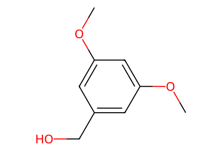
COc1cc(CO)cc(OC)c149 molecular records, 28 events and four target paths. Combined yields, epimer mixtures, source contradictions and excluded model-study scope remain explicit. Independent chemist review pending.
完整 JSON · 逐步 CSV · 路线序列 · SDF · HRMS 核对
| 事件 | 分子连接 | 报告产率 | Canonical reaction SMILES |
|---|---|---|---|
| E01 | THF-feedstock → 19 | 19: 91% | C1CCOC1>>C=CO[Si](C)(C)C |
| E02 | dimethyl-malonate → 18 | 18: 79% | COC(=O)CC(=O)OC>>C=C(C(=O)OC)C(=O)OC |
| E03 | 18 + 19 → rac-11 | rac-11: 49% | C=C(C(=O)OC)C(=O)OC.C=CO[Si](C)(C)C>>COC(=O)C1(C(=O)OC)CCC1O[Si](C)(C)C |
| E04 | arene-alcohol + tert-butanol → SI17 | SI17: 86% | CC(C)(C)O.COc1cc(CO)cc(OC)c1>>COc1cc(COC(C)(C)C)cc(OC)c1 |
| E05 | SI17 → SI18 | SI18: 65% | COc1cc(COC(C)(C)C)cc(OC)c1>>COc1cc(COC(C)(C)C)cc(OC)c1C=O |
| E06 | SI18 + malonic-acid → SI19 | SI19: 91% | COc1cc(COC(C)(C)C)cc(OC)c1C=O.O=C(O)CC(=O)O>>COc1cc(COC(C)(C)C)cc(OC)c1/C=C/C(=O)O |
| E07 | SI19 → 47 | 47: 96% | COc1cc(COC(C)(C)C)cc(OC)c1/C=C/C(=O)O>>COc1cc(COC(C)(C)C)cc(OC)c1/C=C/C(=O)F |
| E08 | 47 + rac-11 → 52c + 55-Z + 55-E | 52c: 53%; 55-Z: 18% | COC(=O)C1(C(=O)OC)CCC1O[Si](C)(C)C.COc1cc(COC(C)(C)C)cc(OC)c1/C=C/C(=O)F>>COC(=O)C(C/C=C/OC(=O)/C=C/c1c(OC)cc(COC(C)(C)C)cc1OC)C(=O)OC.COC(=O)C(C/C=C\OC(=O)/C=C/c1c(OC)cc(COC(C)(C)C)cc1OC)C(=O)OC.COC(=O)C1(C(=O)OC)CC[C@H]2OC(=O)[C@H]2[C@@H]1c1c(OC)cc(COC(C)(C)C)cc1OC |
| E09 | 52c → cis-53c + trans-53c + 54c | cis-53c: 84%; 54c: 13% | COC(=O)C1(C(=O)OC)CC[C@H]2OC(=O)[C@H]2[C@@H]1c1c(OC)cc(COC(C)(C)C)cc1OC>>COC(=O)[C@@H]1CCC=C[C@@H]1c1c(OC)cc(COC(C)(C)C)cc1OC.COC(=O)[C@H]1CCC=C[C@@H]1c1c(OC)cc(COC(C)(C)C)cc1OC.COc1cc(COC(C)(C)C)cc2c1[C@H]1C=CCC[C@H]1C(=O)O2 |
| E10 | cis-53c + trans-53c → 56 + trans-56 | 56: 76% | COC(=O)[C@@H]1CCC=C[C@@H]1c1c(OC)cc(COC(C)(C)C)cc1OC.COC(=O)[C@H]1CCC=C[C@@H]1c1c(OC)cc(COC(C)(C)C)cc1OC>>COc1cc(COC(C)(C)C)cc(OC)c1[C@H]1C=CCC[C@@H]1C(=O)N(C)OC.COc1cc(COC(C)(C)C)cc(OC)c1[C@H]1C=CCC[C@H]1C(=O)N(C)OC |
| E11 | 54c → SI20 | SI20: 84% | COc1cc(COC(C)(C)C)cc2c1[C@H]1C=CCC[C@H]1C(=O)O2>>COc1cc(COC(C)(C)C)cc(O)c1[C@H]1C=CCC[C@H]1C(=O)N(C)OC |
| E12 | SI20 → 56 | 56: 48% | COc1cc(COC(C)(C)C)cc(O)c1[C@H]1C=CCC[C@H]1C(=O)N(C)OC>>COc1cc(COC(C)(C)C)cc(OC)c1[C@H]1C=CCC[C@H]1C(=O)N(C)OC |
| E13 | bromo-sidechain → 24 | not reported | CC(C)=CCCBr>>[CH2-]CC=C(C)C.[Li+] |
| E14 | 56 + 24 → 57 | 57: 74% | COc1cc(COC(C)(C)C)cc(OC)c1[C@H]1C=CCC[C@H]1C(=O)N(C)OC.[CH2-]CC=C(C)C.[Li+]>>COc1cc(COC(C)(C)C)cc(OC)c1[C@H]1C=CCC[C@H]1C(=O)CCC=C(C)C |
| E15 | 57 → 58 | 58: 59% | COc1cc(COC(C)(C)C)cc(OC)c1[C@H]1C=CCC[C@H]1C(=O)CCC=C(C)C>>CC(C)=CCC[C@@](C)(O)[C@@H]1CCC=C[C@@H]1c1c(O)cc(CO)cc1O |
| E16 | 58 → 59 + epi-59 | 59: 27% | CC(C)=CCC[C@@](C)(O)[C@@H]1CCC=C[C@@H]1c1c(O)cc(CO)cc1O>>CC(C)=CCC[C@@]1(C)Oc2cc(Cc3ccccc3)cc(O)c2[C@H]2C=CCC[C@H]21.CC(C)=CCC[C@]1(C)Oc2cc(Cc3ccccc3)cc(O)c2[C@H]2C=CCC[C@H]21 |
| E17 | 58 → 60a + 60b | 60a: 40%; 60b: 20% | CC(C)=CCC[C@@](C)(O)[C@@H]1CCC=C[C@@H]1c1c(O)cc(CO)cc1O>>CC(C)=CCC[C@]1(C)Oc2cc(CO)cc(O)c2[C@H]2C=CCC[C@H]21.CC(C)=CCC[C@]1(C)Oc2cc(COS(=O)(=O)c3ccc(C)cc3)cc(O)c2[C@H]2C=CCC[C@H]21 |
| E18 | 58 → 61a + epi-61a | 61a: 69% | CC(C)=CCC[C@@](C)(O)[C@@H]1CCC=C[C@@H]1c1c(O)cc(CO)cc1O>>CC(C)(CCC[C@@]1(C)Oc2cc(COC(=O)C(F)(F)F)cc(O)c2[C@H]2C=CCC[C@H]21)OC(=O)C(F)(F)F.CC(C)(CCC[C@]1(C)Oc2cc(COC(=O)C(F)(F)F)cc(O)c2[C@H]2C=CCC[C@H]21)OC(=O)C(F)(F)F |
| E19 | 58 → 61a + 61b | 61a: 72% | CC(C)=CCC[C@@](C)(O)[C@@H]1CCC=C[C@@H]1c1c(O)cc(CO)cc1O>>CC(C)(CCC[C@]1(C)Oc2cc(CO)cc(O)c2[C@H]2C=CCC[C@H]21)OC(=O)C(F)(F)F.CC(C)(CCC[C@]1(C)Oc2cc(COC(=O)C(F)(F)F)cc(O)c2[C@H]2C=CCC[C@H]21)OC(=O)C(F)(F)F |
| E20 | 61a + epi-61a → 62a + epi-62a + 62b + epi-62b | 62a: 23%; 62b: 16% | CC(C)(CCC[C@@]1(C)Oc2cc(COC(=O)C(F)(F)F)cc(O)c2[C@H]2C=CCC[C@H]21)OC(=O)C(F)(F)F.CC(C)(CCC[C@]1(C)Oc2cc(COC(=O)C(F)(F)F)cc(O)c2[C@H]2C=CCC[C@H]21)OC(=O)C(F)(F)F>>CC(C)(CCC[C@@]1(C)Oc2cc(COC(=O)C(F)(F)F)c(C=O)c(O)c2[C@H]2C=CCC[C@H]21)OC(=O)C(F)(F)F.CC(C)(CCC[C@]1(C)Oc2cc(COC(=O)C(F)(F)F)c(C=O)c(O)c2[C@H]2C=CCC[C@H]21)OC(=O)C(F)(F)F.CC(C)(Cl)CCC[C@@]1(C)Oc2cc(COC(=O)C(F)(F)F)c(C=O)c(O)c2[C@H]2C=CCC[C@H]21.CC(C)(Cl)CCC[C@]1(C)Oc2cc(COC(=O)C(F)(F)F)c(C=O)c(O)c2[C@H]2C=CCC[C@H]21 |
| E21 | 61a + epi-61a → 62b + epi-62b | 62b: 72% | CC(C)(CCC[C@@]1(C)Oc2cc(COC(=O)C(F)(F)F)cc(O)c2[C@H]2C=CCC[C@H]21)OC(=O)C(F)(F)F.CC(C)(CCC[C@]1(C)Oc2cc(COC(=O)C(F)(F)F)cc(O)c2[C@H]2C=CCC[C@H]21)OC(=O)C(F)(F)F>>CC(C)(Cl)CCC[C@@]1(C)Oc2cc(COC(=O)C(F)(F)F)c(C=O)c(O)c2[C@H]2C=CCC[C@H]21.CC(C)(Cl)CCC[C@]1(C)Oc2cc(COC(=O)C(F)(F)F)c(C=O)c(O)c2[C@H]2C=CCC[C@H]21 |
| E22 | 58 → 64 + epi-64 | 64: 59% | CC(C)=CCC[C@@](C)(O)[C@@H]1CCC=C[C@@H]1c1c(O)cc(CO)cc1O>>CC(C)(Cl)CCC[C@@]1(C)Oc2cc3c(c(O)c2[C@H]2C=CCC[C@H]21)C(=O)OC3.CC(C)(Cl)CCC[C@]1(C)Oc2cc3c(c(O)c2[C@H]2C=CCC[C@H]21)C(=O)OC3 |
| E23 | 64 → 65 + 66 | 65: 66%; 66: 27% | CC(C)(Cl)CCC[C@]1(C)Oc2cc3c(c(O)c2[C@H]2C=CCC[C@H]21)C(=O)OC3>>CC(C)(Cl)CCC[C@]1(C)Oc2cc3c(c(O)c2[C@H]2[C@H]4O[C@H]4CC[C@H]21)C(=O)OC3.CC(C)(Cl)CCC[C@]1(C)Oc2cc3c(c4c2[C@H]2[C@@H](O4)[C@H](O)CC[C@H]21)C(=O)OC3 |
| E24 | 65 → 67 + exo-67 | 67: 84% | CC(C)(Cl)CCC[C@]1(C)Oc2cc3c(c4c2[C@H]2[C@@H](O4)[C@H](O)CC[C@H]21)C(=O)OC3>>C=C(C)CCC[C@]1(C)Oc2cc3c(c4c2[C@H]2[C@@H](O4)[C@H](O)CC[C@H]21)C(=O)OC3.CC(C)=CCC[C@]1(C)Oc2cc3c(c4c2[C@H]2[C@@H](O4)[C@H](O)CC[C@H]21)C(=O)OC3 |
| E25 | exo-67 → 65 | 65: 81% | C=C(C)CCC[C@]1(C)Oc2cc3c(c4c2[C@H]2[C@@H](O4)[C@H](O)CC[C@H]21)C(=O)OC3>>CC(C)(Cl)CCC[C@]1(C)Oc2cc3c(c4c2[C@H]2[C@@H](O4)[C@H](O)CC[C@H]21)C(=O)OC3 |
| E26 | 67 → SI22 | SI22: 90% | CC(C)=CCC[C@]1(C)Oc2cc3c(c4c2[C@H]2[C@@H](O4)[C@H](O)CC[C@H]21)C(=O)OC3>>CC(C)=CCC[C@]1(C)Oc2cc3c(c4c2[C@@H]2[C@H]1CCC(=O)[C@@H]2O4)C(=O)OC3 |
| E27 | SI22 → 3 | 3: 85% | CC(C)=CCC[C@]1(C)Oc2cc3c(c4c2[C@@H]2[C@H]1CCC(=O)[C@@H]2O4)C(=O)OC3>>CC(C)=CCC[C@]1(C)Oc2cc3c(c4c2[C@H]2[C@@H](O4)[C@@](C)(O)CC[C@H]21)C(=O)OC3 |
| E28 | 3 → 1 | 1: 72% | CC(C)=CCC[C@]1(C)Oc2cc3c(c4c2[C@H]2[C@@H](O4)[C@@](C)(O)CC[C@H]21)C(=O)OC3>>CC(C)=CCC[C@]1(C)Oc2cc(C=O)c(C=O)c3c2[C@H]2[C@@H](O3)[C@@](C)(O)CC[C@H]21 |

COc1cc(CO)cc(OC)c1
CC(C)(C)O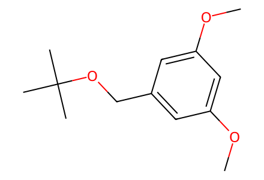
COc1cc(COC(C)(C)C)cc(OC)c1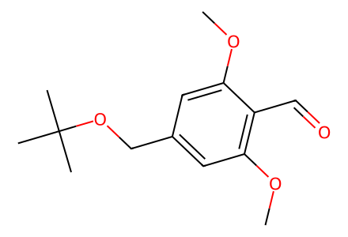
COc1cc(COC(C)(C)C)cc(OC)c1C=O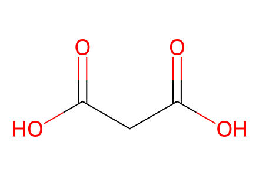
O=C(O)CC(=O)O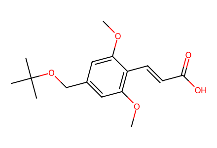
COc1cc(COC(C)(C)C)cc(OC)c1/C=C/C(=O)O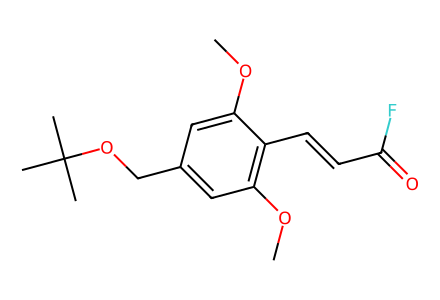
COc1cc(COC(C)(C)C)cc(OC)c1/C=C/C(=O)F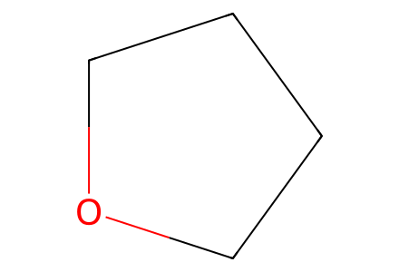
C1CCOC1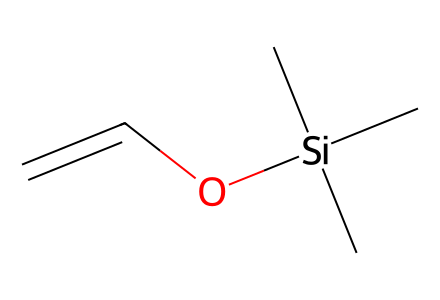
C=CO[Si](C)(C)C
COC(=O)CC(=O)OC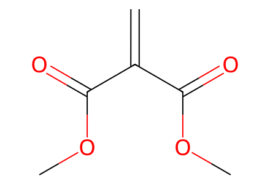
C=C(C(=O)OC)C(=O)OC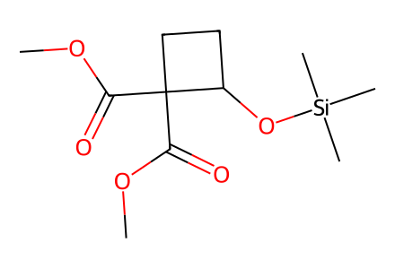
COC(=O)C1(C(=O)OC)CCC1O[Si](C)(C)C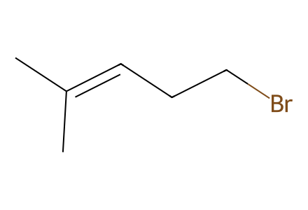
CC(C)=CCCBr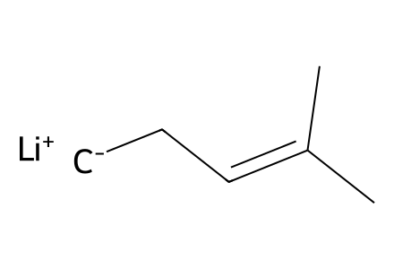
[CH2-]CC=C(C)C.[Li+]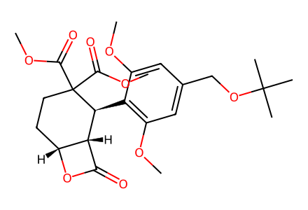
COC(=O)C1(C(=O)OC)CC[C@H]2OC(=O)[C@H]2[C@@H]1c1c(OC)cc(COC(C)(C)C)cc1OC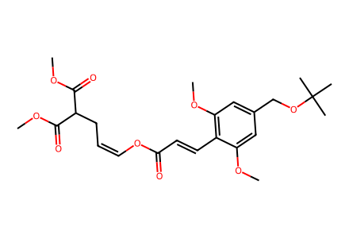
COC(=O)C(C/C=C\OC(=O)/C=C/c1c(OC)cc(COC(C)(C)C)cc1OC)C(=O)OC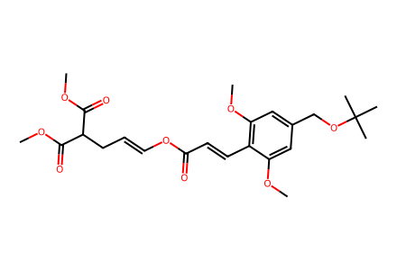
COC(=O)C(C/C=C/OC(=O)/C=C/c1c(OC)cc(COC(C)(C)C)cc1OC)C(=O)OC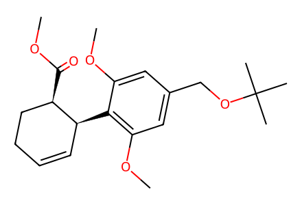
COC(=O)[C@@H]1CCC=C[C@@H]1c1c(OC)cc(COC(C)(C)C)cc1OC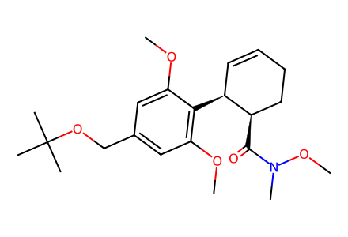
COc1cc(COC(C)(C)C)cc(OC)c1[C@H]1C=CCC[C@H]1C(=O)N(C)OC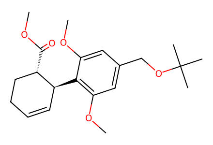
COC(=O)[C@H]1CCC=C[C@@H]1c1c(OC)cc(COC(C)(C)C)cc1OC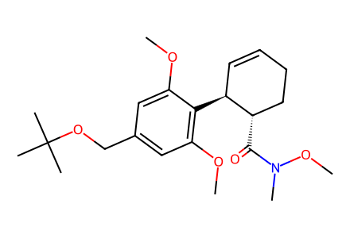
COc1cc(COC(C)(C)C)cc(OC)c1[C@H]1C=CCC[C@@H]1C(=O)N(C)OC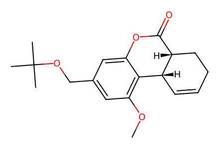
COc1cc(COC(C)(C)C)cc2c1[C@H]1C=CCC[C@H]1C(=O)O2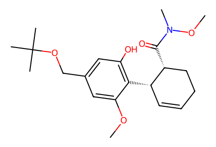
COc1cc(COC(C)(C)C)cc(O)c1[C@H]1C=CCC[C@H]1C(=O)N(C)OC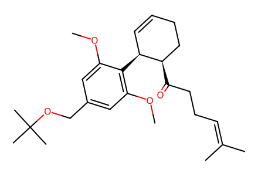
COc1cc(COC(C)(C)C)cc(OC)c1[C@H]1C=CCC[C@H]1C(=O)CCC=C(C)C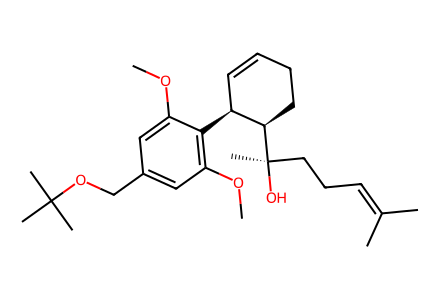
COc1cc(COC(C)(C)C)cc(OC)c1[C@H]1C=CCC[C@H]1[C@](C)(O)CCC=C(C)C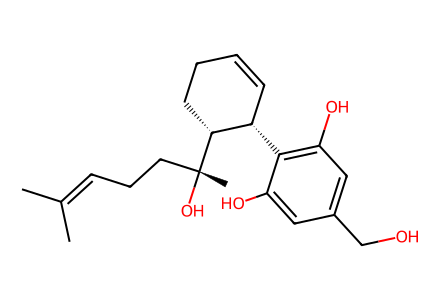
CC(C)=CCC[C@@](C)(O)[C@@H]1CCC=C[C@@H]1c1c(O)cc(CO)cc1O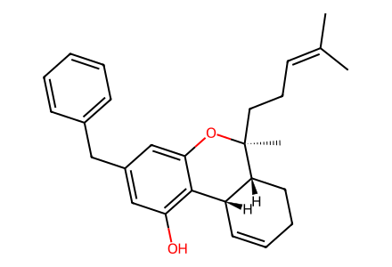
CC(C)=CCC[C@]1(C)Oc2cc(Cc3ccccc3)cc(O)c2[C@H]2C=CCC[C@H]21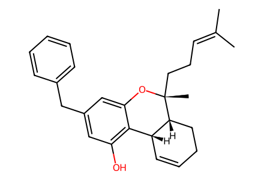
CC(C)=CCC[C@@]1(C)Oc2cc(Cc3ccccc3)cc(O)c2[C@H]2C=CCC[C@H]21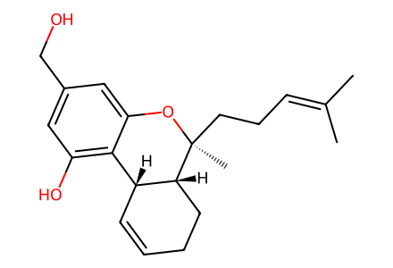
CC(C)=CCC[C@]1(C)Oc2cc(CO)cc(O)c2[C@H]2C=CCC[C@H]21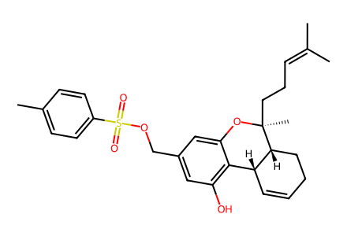
CC(C)=CCC[C@]1(C)Oc2cc(COS(=O)(=O)c3ccc(C)cc3)cc(O)c2[C@H]2C=CCC[C@H]21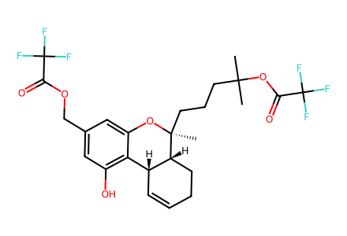
CC(C)(CCC[C@]1(C)Oc2cc(COC(=O)C(F)(F)F)cc(O)c2[C@H]2C=CCC[C@H]21)OC(=O)C(F)(F)F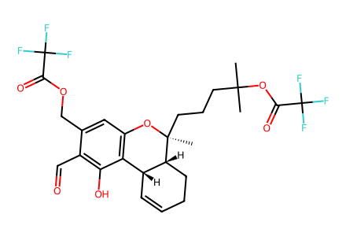
CC(C)(CCC[C@]1(C)Oc2cc(COC(=O)C(F)(F)F)c(C=O)c(O)c2[C@H]2C=CCC[C@H]21)OC(=O)C(F)(F)F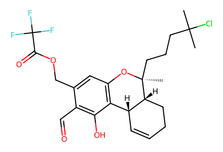
CC(C)(Cl)CCC[C@]1(C)Oc2cc(COC(=O)C(F)(F)F)c(C=O)c(O)c2[C@H]2C=CCC[C@H]21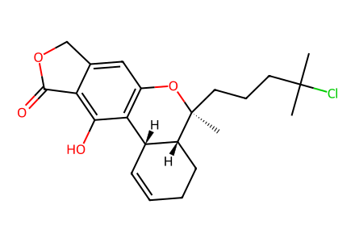
CC(C)(Cl)CCC[C@]1(C)Oc2cc3c(c(O)c2[C@H]2C=CCC[C@H]21)C(=O)OC3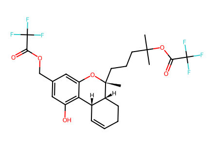
CC(C)(CCC[C@@]1(C)Oc2cc(COC(=O)C(F)(F)F)cc(O)c2[C@H]2C=CCC[C@H]21)OC(=O)C(F)(F)F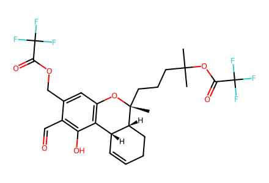
CC(C)(CCC[C@@]1(C)Oc2cc(COC(=O)C(F)(F)F)c(C=O)c(O)c2[C@H]2C=CCC[C@H]21)OC(=O)C(F)(F)F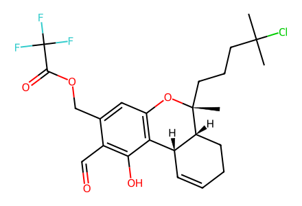
CC(C)(Cl)CCC[C@@]1(C)Oc2cc(COC(=O)C(F)(F)F)c(C=O)c(O)c2[C@H]2C=CCC[C@H]21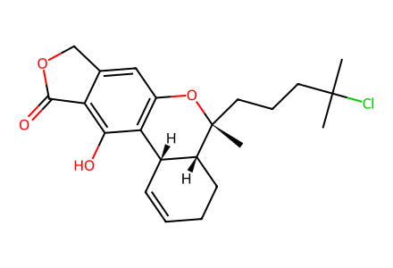
CC(C)(Cl)CCC[C@@]1(C)Oc2cc3c(c(O)c2[C@H]2C=CCC[C@H]21)C(=O)OC3
CC(C)(CCC[C@]1(C)Oc2cc(CO)cc(O)c2[C@H]2C=CCC[C@H]21)OC(=O)C(F)(F)F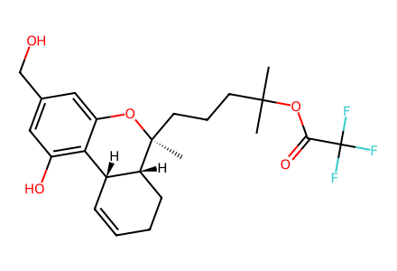
CC(C)(CCC[C@]1(C)Oc2cc(CO)cc(O)c2[C@H]2C=CCC[C@H]21)OC(=O)C(F)(F)F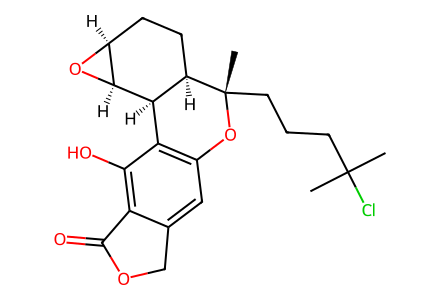
CC(C)(Cl)CCC[C@]1(C)Oc2cc3c(c(O)c2[C@H]2[C@H]4O[C@H]4CC[C@H]21)C(=O)OC3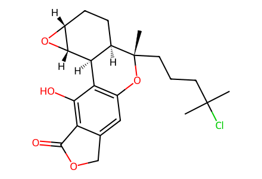
CC(C)(Cl)CCC[C@]1(C)Oc2cc3c(c(O)c2[C@H]2[C@@H]4O[C@@H]4CC[C@H]21)C(=O)OC3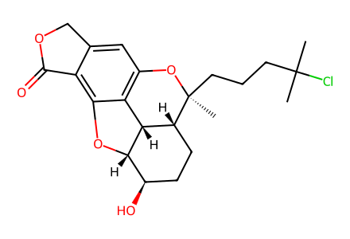
CC(C)(Cl)CCC[C@]1(C)Oc2cc3c(c4c2[C@H]2[C@@H](O4)[C@H](O)CC[C@H]21)C(=O)OC3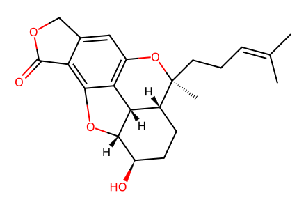
CC(C)=CCC[C@]1(C)Oc2cc3c(c4c2[C@H]2[C@@H](O4)[C@H](O)CC[C@H]21)C(=O)OC3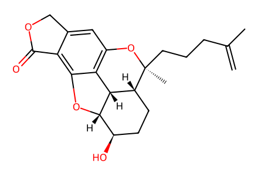
C=C(C)CCC[C@]1(C)Oc2cc3c(c4c2[C@H]2[C@@H](O4)[C@H](O)CC[C@H]21)C(=O)OC3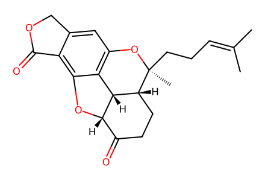
CC(C)=CCC[C@]1(C)Oc2cc3c(c4c2[C@@H]2[C@H]1CCC(=O)[C@@H]2O4)C(=O)OC3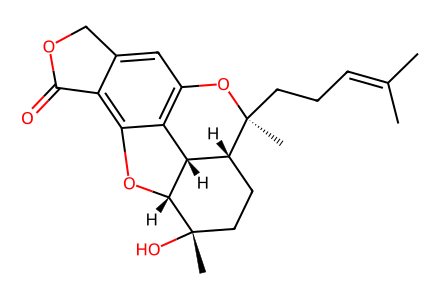
CC(C)=CCC[C@]1(C)Oc2cc3c(c4c2[C@H]2[C@@H](O4)[C@@](C)(O)CC[C@H]21)C(=O)OC3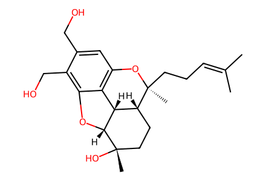
CC(C)=CCC[C@]1(C)Oc2cc(CO)c(CO)c3c2[C@H]2[C@@H](O3)[C@@](C)(O)CC[C@H]21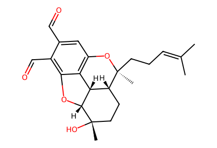
CC(C)=CCC[C@]1(C)Oc2cc(C=O)c(C=O)c3c2[C@H]2[C@@H](O3)[C@@](C)(O)CC[C@H]21